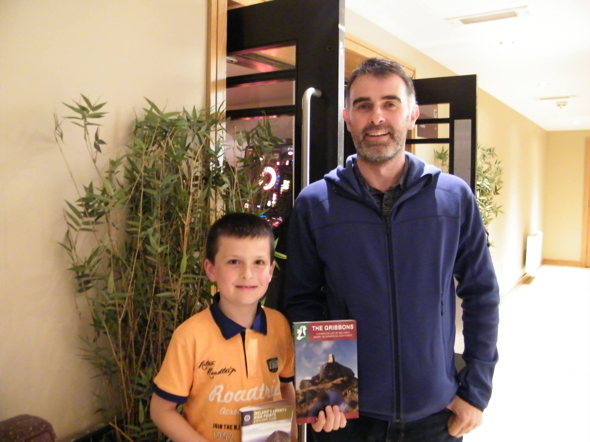
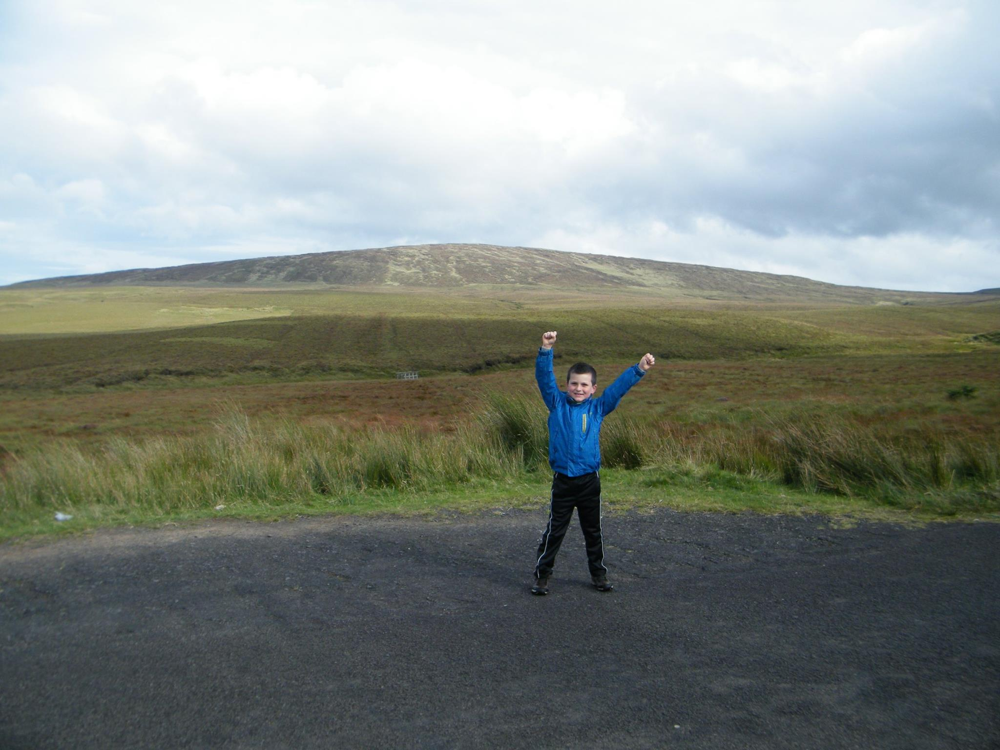
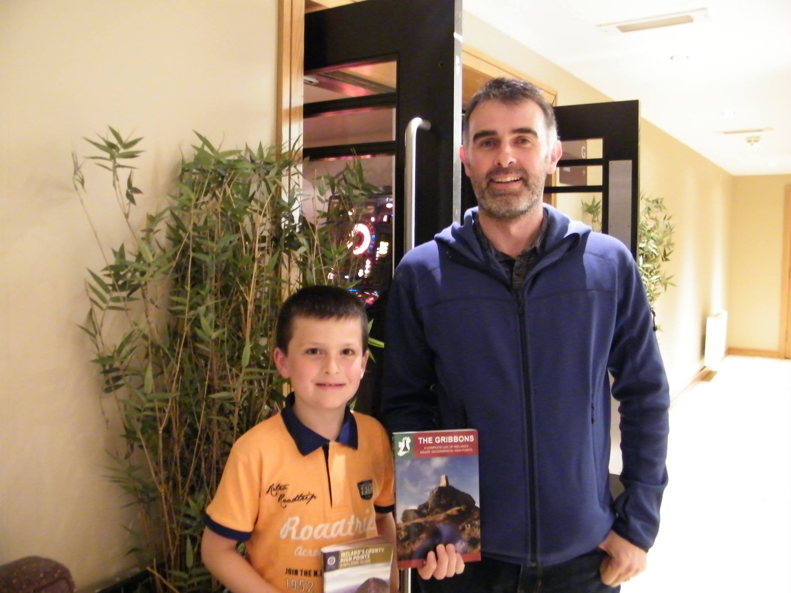
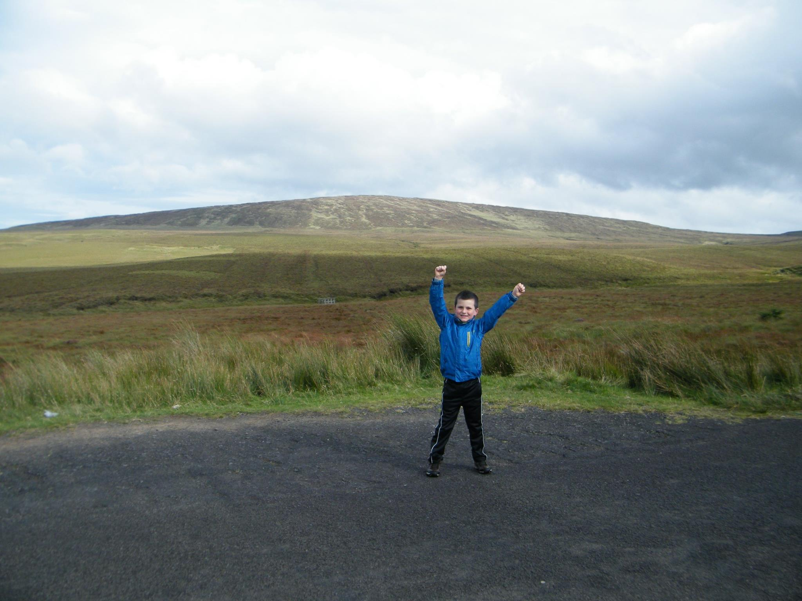

The challenge is to climb to the highest point in all 32 counties of Ireland. Because some counties share the same highest point this means climbing to 27 points as detailed below. Discovering the challenge was accidental while searching the internet for mountains to Climb in West Cork while on holidays in the area. At that time I had already climbed Galtymore which meant after climbing Knockboy in Cork, only Waterford, Kerry and Clare remained to complete the counties of Munster. This became a goal for 2015 and was completed by September that year. That summer Lugnagulla (Wicklow) and Kippure (Dublin) were also completed, starting off Leinster too. The challenge resumed in 2016 by completing Arderin, the highest point of Laois and Offaly, bringing the count to 10 out of 32 counties completed. In May 2016 it was decided to use the challenge to try and raise funds for kildorrery karate and Cloyne Diocesan Youth Services (CYDS). I aim to complete the challenge before I turn 11 years old.
September 2016 update
The challenge was completed on 11 Sep 2016, well before schedule and while I was still age 9, making me the youngest in the country to do it. This was helped by fitting in walks while holidaying in Donegal as well as during the return journey from there. We also fitted in some walks with appointments for a new Dancing costume in Belfast, thanks for that Rachel. Outside of these any day that was free over the summer was a walking day to get another ticked off until finally they were all complete. The walking was very enjoyable, seeing so many new places and overcoming the challenges of the Irish weather. I was also delighted to meet with Kieron Gribbon the author of "Ireland's County High Points - A Walking Guide" (a must have book throughout the challenge and I would recommend anyone taking on the challenge to get a copy). Kieron took time out to meet and chat with us on the evening of the final climb and we all had a great chat for a few hours about the book and the many adventures of the challenge. Thanks to everyone for supporting the challenge and anyone thinking of completing it for themselves, check out my list of necessary items for the challenge.
 
